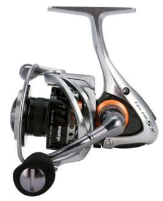

ReelCalc Reel Setup Guide
Okuma Helios SX 30 Line Capacity & Reel Setup Guide
Planning to use the Okuma Helios SX 30 for repeated finesse bass and walleye casting? Its published 8 lb / 200 yards mono capacity gives you a starting point for choosing line. C-40X construction reduces frame weight, and Torsion Control Armor resists twisting while line is retrieved under pressure. Choose your exact line in the preloaded calculator below to estimate a full spool or optional backing beneath a shorter working length.